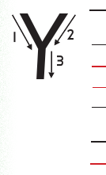

Lesson 20: Letter Y
Lesson 20
Letter Y

Draw, identify, or describe the pattern for the letter Y; explore a teacher-provided raised-line version before answering.

Trace or finger spell the letter Y; explore a teacher-provided raised-line letter model before answering.

Copy or finger spell the letter Y using the writing lines, keyboard, or braille.
Copy or finger spell uppercase Y with lowercase y using the writing lines, keyboard, or braille.
Copy or sign the following words in your exercise book.
Copy or sign the word Yogurt using the writing lines, keyboard, or braille.
Copy or sign the word Yawn using the writing lines, keyboard, or braille.
Copy or sign the word York using the writing lines, keyboard, or braille.
Copy or sign the word Yes using the writing lines, keyboard, or braille.